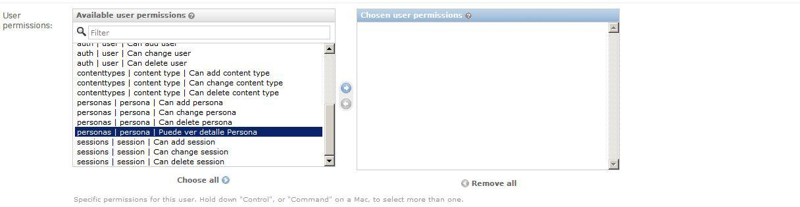

Personalizando Permisos
Hasta ahora hemos trabajado con los permisos básicos que nos proporciona Django de manera automática, pero que pasa si nosotros quisieramos restringir cosas mas al detalle, por ejemplo que un usuario determinado no vea el detalle de la persona, o la tabla que lista a todas las personas, o que no pueda exportar a una hoja de cálculo. Empecemos por lo mas sencillo, creemos un permiso para restringir el acceso al detalle de la persona, para ello personalizaremos los permisos en el modelo, de la siguiente manera:
models.py
from django.db import models # Create your models here. class Persona(models.Model): dni= models.CharField(primary_key=True,max_length=8) nombre = models.CharField(max_length=100) apellido_paterno = models.CharField(max_length=100) apellido_materno = models.CharField(max_length=100) class Meta: permissions = (('ver_detalle_persona', 'Puede ver detalle Persona'),)
Veamos que hay de nuevo en nuestro modelo y lo primero que salta a la vista es el uso de una metaclase aquí definiremos el atributo permissions que es una tupla donde se definiran los múltiples permisos personalizados que podemos crear en este caso tenemos el par ('ver_detalle_persona', 'Puede ver detalle Persona') donde 'ver_detalle_persona' es el nombre del permiso y 'Puede ver detalle Persona' es una especie de descripción de lo que significa ese permiso, ahora ya lo tenemos listo, pero no podemos aplicarlo directamente sino que primero tenemos que hacer la migración correspondiente a la base de datos, ya que ha ocurrido una modificación del modelo:
python manage.py makemigrations personas python manage.py migrate
Ya con esto podemos usar el permiso, para ello modificaremos el archivo personas.html:
{% if perms.personas.ver_detalle_persona %} <a class="btn btn-small" href="{% url 'personas:detalle_persona' persona.pk %}"> <span class="glyphicon glyphicon-folder-open"></span> </a> {% endif %}
Ahora nos logueamos con cualquiera de los usuarios nuevos que creamos en la sesión pasada, en este caso lo haremos con usuario1:

Y vemos que no aparece el ícono del libro por lo tanto aparentemente no podemos acceder al detalle de la persona, pero igual que la vez pasada si es posible acceder a través de la url:
http://localhost:8000/personas/detalle_persona/44626821/
Nos falta hacer lo mismo de antes en nuestra vista DetallePersona:
views.py
class DetallePersona(DetailView): model = Persona template_name = 'detalle_persona.html' @method_decorator(permission_required('personas.ver_detalle_persona',reverse_lazy('personas:personas'))) def dispatch(self, *args, **kwargs): return super(DetallePersona, self).dispatch(*args, **kwargs)
Listo ya con esto el usuario no puede ingresar al detalle de la persona y es inmediatamente redireccionado a la tabla de personas, ahora otorguemosle permisos al usuario1 a través de la interfaz de administración:
Damos click en la flecha y guardamos la modificación, ahora ingresemos a la aplicación personas con el usuario1 y nos debe salir una pantalla como la siguiente:
Eso es todo por hoy, en un proximo post terminaremos de personalizar el resto de permisos y hacerle algunas modificaciones estéticas a nuestro proyecto. Saludos.
Comentarios
Comments powered by Disqus